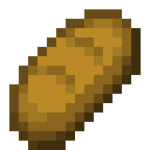
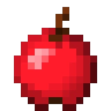
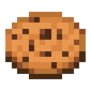

遊戲介紹
簡介
餓了三天的冒險家 Steve 不小心在探險的過程中誤入了迷宮，需要在層層的關卡中找到食物，才有力氣逃出迷宮。請你幫幫他找出迷宮裡的食物
規則介紹
玩家需準備一個鍵盤，利用上下左右鍵控制角色移動，並尋找、搜集迷宮中遺落的食物，將所有食物搜集完畢即可過關
出場人物
資深冒險家 Steve：曾打敗崇崇巨龍
 樹莓：一種生長於家潤發12樓的稀有莓果，味道香甜可口，是所有美食家嚮往的食材
樹莓：一種生長於家潤發12樓的稀有莓果，味道香甜可口，是所有美食家嚮往的食材
 麵包：利用台北金字塔左邊的沙哈拉沙漠種的小麥製成的啊不就好好吃麵包，聽說吃上一個就能滿足一個人類20年的食物需求
 蘋果：採集於西伯利亞中心的百慕達小米州，皮薄肉多、汁水充足，真滴好吃！
 餅乾：餅乾中的皇家奶油青蛙懶得跳巧克力豆，採集於西台灣未崇雨林的第19顆樹上，因為他的珍貴和製作的難度世上只有我不姓鄧光二能發揮出其15%的美味，這餅乾真是一片難求，要價至少15元猩台幣